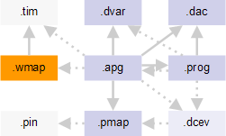

Waveform mapping file
The waveform mapping file is an optional configuration file that is needed for Indirect waveform mapping. It maps calculated patterns from the APG program to indexes into the timing settings specified in SmarTest at run-time.

The waveform mapping file has the .wmap file name extension. It is referenced from the APG pattern file with the :waveformMap: keyword.
The waveform mapping file contains for each pin or pin group a list with matching pairs of indexes and waveforms. During compilation, the MTL compiler takes the waveform compiled for the pins in question and looks it up in the list. It then takes the corresponding index and includes that in the final vector file.
Note Under certain conditions, you can also use a waveform mapping file in place of a
timing file for direct waveform mapping. See the discussion of the
:waveformMap: keyword in APG pattern file.
Example
# covers clock-like combination only # [1 ][0 ][1 ][0 ] PINS CK () 0 "1010" 1010 80 "1010" 1010_ni # covers nClock-like combination only # [0 ][1 ][0 ][1 ] PINS CKn () 0 "0101" 0101 80 "0101" 0101_ni # covers all possible combinations # [01][01][01][01] PINS Address_Bus Bank_Addr_Bus CASn CKE CSn RASn WEn ODT RESETn DM_Bus () 0 "0000" 0000 1 "0001" 0001 2 "0010" 0010 3 "0011" 0011 ... f "1111" 1111 80 "0000" 0000_ni ... 8f "1111" 1111_ni # covers tCK-based combinations only # [01][01][01][01] # [01][01][i ][i ] # [i ][i ][01][01] # [i ][i ][i ][i ] PINS DQi_Bus DQSi_DiffBus () 0 "iiii" iiii 1 "ii00" ii00 2 "ii01" ii01 3 "ii10" ii10 ... 18 "11ii" 11ii 80 "iiii" iiii_ni ... 98 "11ii" 11ii_ni # covers all possible combinations # [LHX][LHX][LHX][LHX] PINS DQ_Bus DQS_DiffBus () 0 "LLLL" LLLL 1 "LLLH" LLLH 2 "LLLX" LLLX 3 "LLHL" LLHL ... 50 "XXXX" XXXX 80 "LLLL" LLLL_ni ... d0 "XXXX" XXXX_ni
Note If Transparent x-modes are used, no names are permitted within the parentheses.
The correct syntax in this case is, for example,
PINS clock ().Note An unmodified SmarTest timing file can be used in place of the waveform mapping file
for indirect waveform mapping. This requires copying the timing file and referencing it from the
APG pattern file using the syntax for direct waveform mapping. (That is, giving both file name
and wavetable name arguments for the :waveformMap: keyword.)
Functional changes
- Introduced before SmarTest 6.3.2